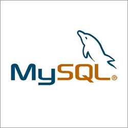

Antes de iniciar con esta presentación debemos tener en cuenta de que tema hablaremos hoy, por eso primero daremos una introducción o adelanto a lo que es MySQL
MySQL es uno de los sistemas de gestión de bases de datos relacionales más utilizados en el desarrollo de
aplicaciones y sitios web.
Su función principal es permitir almacenar, organizar, consultar, modificar y administrar grandes cantidades de
información de manera estructurada.
MySQL trabaja utilizando el lenguaje SQL (Structured Query Language),
mediante el cual se pueden realizar diferentes operaciones sobre una base de datos,
como crear tablas, insertar información, consultar registros, actualizar datos y eliminar información.
Actualmente, MySQL es utilizado en diferentes tipos de proyectos,
desde páginas web y sistemas empresariales hasta aplicaciones educativas y plataformas de comercio electrónico.
Su facilidad de uso, rendimiento y compatibilidad con diferentes lenguajes de programación lo convierten en una
herramienta importante
para el desarrollo de software.

MySQL es un sistema de gestión de bases de datos relacionales, conocido como RDBMS (Relational Database Management System). Su función es permitir que los desarrolladores y administradores puedan almacenar y administrar información organizada en diferentes tablas relacionadas entre sí. Por ejemplo, para una academia de inglés se podrían crear tablas como:

SQL significa Structured Query Language, que en español significa Lenguaje de Consulta Estructurado. Es el lenguaje utilizado para comunicarse con diferentes sistemas de bases de datos. Con SQL podemos: